台湾の楽しみは夜市にあり [旅行記]
お夕飯に向かいつつ街をそぞろ歩いていたらやっぱりいた。
台湾にゃんこー！！

こんにちは♡
ボンネットがあにゃたの足跡だらけですよ。

![[猫]](https://blog.ss-blog.jp/_images_e/101.gif) ギロッ
ギロッ![[むかっ（怒り）]](https://blog.ss-blog.jp/_images_e/152.gif)
・・・・・(^▽^;) さすが世界のお猫様。
日本と同じく猫ブームなのか猫のグッズや猫カフェらしき看板もちらほら見かけましたよ。

迪化街（てきかがい、ディーホアジエ）という問屋街を眺めつつ進みます。
乾物やお茶を主に扱っているとのことですが
問屋さんのままのお店、お土産屋さんに特化してしまったお店入り乱れている感じです。
観光客と地元の人でたいそうな賑わい。

ここで台湾の高山茶（烏龍茶です）を購入。
台湾の烏龍茶はまろやかで美味しいのです。
家には中国茶器のセットもあるのですが面倒なので急須で入れて飲んでますよw

からすみはここで買いました。
からすみ、早く食べたいのですがお酒がどんどん進んじゃいそうなので
お休みの前の日しか食べられないな・・・と日を選び中。
この迪化街で目についたのがツバメの巣。中華料理の高級食材ですね。
おまんじゅうみたいに綺麗に形を整えられて箱詰めされて並んでました。
安いのか観光客価格なのか判断がつきません。
希少価値はわかりますが美味しいのかな？
一度食べたことはありますが
申し訳程度に料理に添えてあったので味なんてしませんでした。
たらふく食べたことのある方、感想を聞かせてくださいませm(_ _)m

そしてお待ちかねのお夕食はここ、寧夏夜市（ニンシャー・イエスー）。
どうして去年も来たのに今年も台湾へ？の答えはここで食べたいから！！！
台北駅、MRT中山駅などホテルが立ち並ぶ地区から歩いて行ける立地も魅力的。
常設の屋台が夕方ごろから毎日営業しているんですよ。
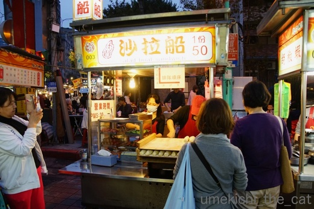
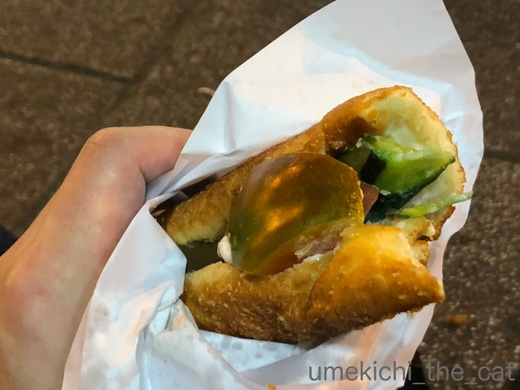
まずはこの揚げパンのサンドイッチ。
揚げたてアツアツの揚げパンにキュウリ・ハム・トマトそして台湾味の煮卵が挟んであります。
ヨーロッパのバゲットサンドのように見えますが、ジ・アジアンな揚げパンサンド。
ちょっぴり甘めなパンが具材にマッチしてます。
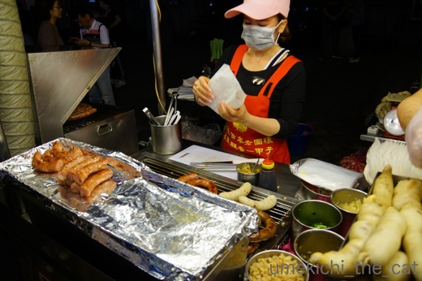
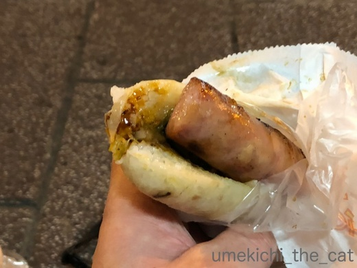
そしてこれー！この大腸包小腸が大好きなんです。
大腸に小腸・・・？なんて思われるかもしれませんが
（私も最初字を見た時、こんな肉々しいの食べられないと思った）
大腸はもち米を腸詰めにしたもの。小腸は台湾ソーセージです。
簡単に言えばもち米ホットドッグ。
ガーリックと甘酢漬けの生姜が絶妙に効いています。
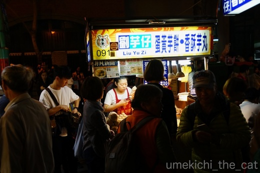
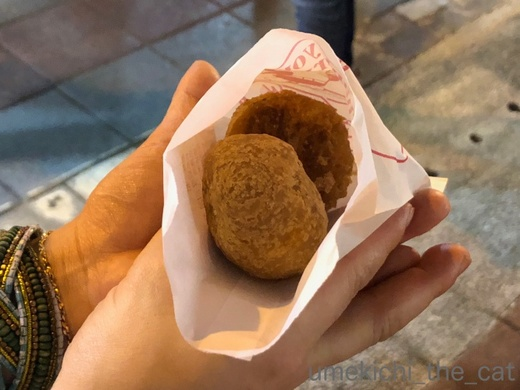
前回大行列にひるんで買わなかった揚げタロ芋だんごも食べましたよ。
プレーンと甘く煮た卵と肉入りの２種があるのですが
タロ芋の味を楽しむなら断然プレーンをお勧めします。
これ好き！お芋好きにはたまりません！！

お店の裏でお母さんが黙々とお団子を丸めてました。
このお店大行列ですが進むのも早いので待ち時間はそんなにありません。
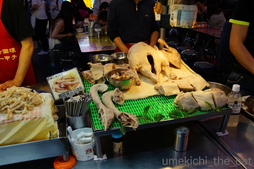
これは写真を撮っただけ。
きゃ〜〜〜！さすが食の国、余すところなく食べるんですねー。
写真のお料理の他に台湾風スパイシー唐揚げ、野菜のクレープ包み
みたいなのを食べておなかいっぱい。
ここに来ると胃袋がもう一つか二つ欲しいな・・・と思うのでした。

夜８時ごろになると人でごった返します。
人混みと行列の苦手な方は６時頃に行くと空いてますよ。

ちなみに今回泊まったのは台北駅から歩いて５分ほどの超便利な立地にある
CityInn Hotel BranchⅢ 。
立派なシティホテルには及びませんがツーリストホテルとしては十分なホテルかと。
フロントは日本語で対応してくれましたよ。
妙なキャラクターで飾られた館内ですが部屋はいたって普通。
もっともキャラ部屋もあるみたいですが。
ホテルに帰ってシッターさんからのメールを何度も読み返して梅吉のことを考えながら
眠りにつきました。
この日は16000歩近く歩いたのですぐに寝ちゃいましたけどwww
 ↑ガブッと一押し↑
↑ガブッと一押し↑
ちょっと席を離れて戻ると

あらららら♡
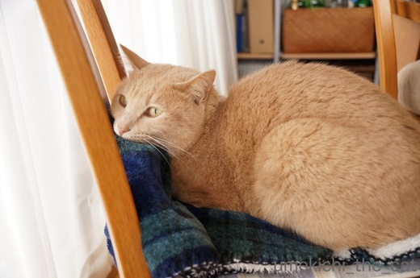
そんなにおかーさんのいた所が好きなんですかー、と一人ニヤニヤ。
猫の行動に勝手に意味付け（もちろんポジティブに）しちゃいませんか？
台湾にゃんこー！！

こんにちは♡
ボンネットがあにゃたの足跡だらけですよ。

・・・・・(^▽^;) さすが世界のお猫様。
日本と同じく猫ブームなのか猫のグッズや猫カフェらしき看板もちらほら見かけましたよ。

迪化街（てきかがい、ディーホアジエ）という問屋街を眺めつつ進みます。
乾物やお茶を主に扱っているとのことですが
問屋さんのままのお店、お土産屋さんに特化してしまったお店入り乱れている感じです。
観光客と地元の人でたいそうな賑わい。

ここで台湾の高山茶（烏龍茶です）を購入。
台湾の烏龍茶はまろやかで美味しいのです。
家には中国茶器のセットもあるのですが面倒なので急須で入れて飲んでますよw

からすみはここで買いました。
からすみ、早く食べたいのですがお酒がどんどん進んじゃいそうなので
お休みの前の日しか食べられないな・・・と日を選び中。
この迪化街で目についたのがツバメの巣。中華料理の高級食材ですね。
おまんじゅうみたいに綺麗に形を整えられて箱詰めされて並んでました。
安いのか観光客価格なのか判断がつきません。
希少価値はわかりますが美味しいのかな？
一度食べたことはありますが
申し訳程度に料理に添えてあったので味なんてしませんでした。
たらふく食べたことのある方、感想を聞かせてくださいませm(_ _)m

そしてお待ちかねのお夕食はここ、寧夏夜市（ニンシャー・イエスー）。
どうして去年も来たのに今年も台湾へ？の答えはここで食べたいから！！！
台北駅、MRT中山駅などホテルが立ち並ぶ地区から歩いて行ける立地も魅力的。
常設の屋台が夕方ごろから毎日営業しているんですよ。
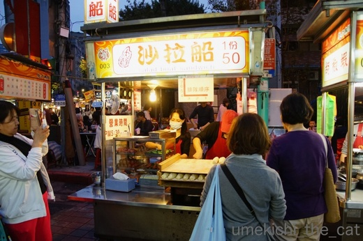
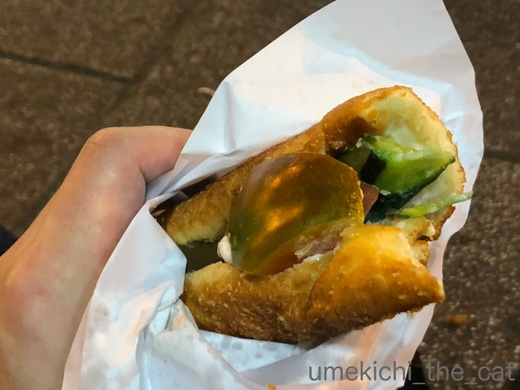
まずはこの揚げパンのサンドイッチ。
揚げたてアツアツの揚げパンにキュウリ・ハム・トマトそして台湾味の煮卵が挟んであります。
ヨーロッパのバゲットサンドのように見えますが、ジ・アジアンな揚げパンサンド。
ちょっぴり甘めなパンが具材にマッチしてます。
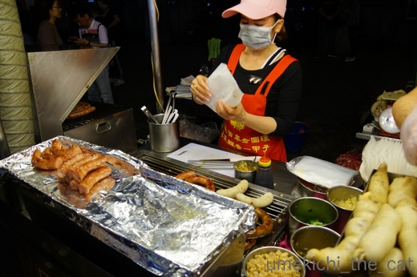
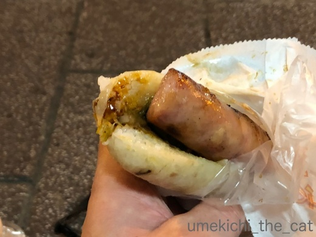
そしてこれー！この大腸包小腸が大好きなんです。
大腸に小腸・・・？なんて思われるかもしれませんが
（私も最初字を見た時、こんな肉々しいの食べられないと思った）
大腸はもち米を腸詰めにしたもの。小腸は台湾ソーセージです。
簡単に言えばもち米ホットドッグ。
ガーリックと甘酢漬けの生姜が絶妙に効いています。
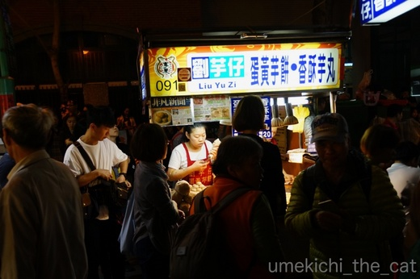
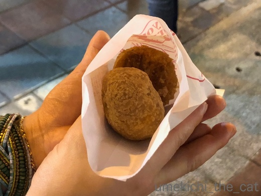
前回大行列にひるんで買わなかった揚げタロ芋だんごも食べましたよ。
プレーンと甘く煮た卵と肉入りの２種があるのですが
タロ芋の味を楽しむなら断然プレーンをお勧めします。
これ好き！お芋好きにはたまりません！！

お店の裏でお母さんが黙々とお団子を丸めてました。
このお店大行列ですが進むのも早いので待ち時間はそんなにありません。
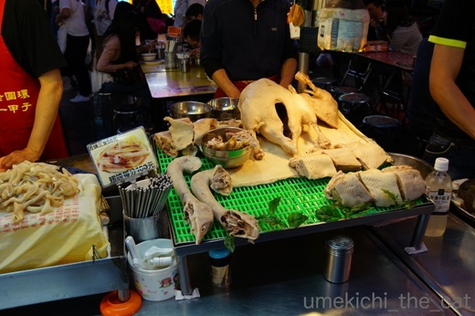
これは写真を撮っただけ。
きゃ〜〜〜！さすが食の国、余すところなく食べるんですねー。
写真のお料理の他に台湾風スパイシー唐揚げ、野菜のクレープ包み
みたいなのを食べておなかいっぱい。
ここに来ると胃袋がもう一つか二つ欲しいな・・・と思うのでした。

夜８時ごろになると人でごった返します。
人混みと行列の苦手な方は６時頃に行くと空いてますよ。

ちなみに今回泊まったのは台北駅から歩いて５分ほどの超便利な立地にある
CityInn Hotel BranchⅢ 。
立派なシティホテルには及びませんがツーリストホテルとしては十分なホテルかと。
フロントは日本語で対応してくれましたよ。
妙なキャラクターで飾られた館内ですが部屋はいたって普通。
もっともキャラ部屋もあるみたいですが。
ホテルに帰ってシッターさんからのメールを何度も読み返して梅吉のことを考えながら
眠りにつきました。
この日は16000歩近く歩いたのですぐに寝ちゃいましたけどwww
ちょっと席を離れて戻ると

あらららら♡
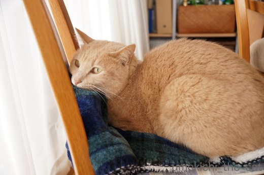
そんなにおかーさんのいた所が好きなんですかー、と一人ニヤニヤ。
猫の行動に勝手に意味付け（もちろんポジティブに）しちゃいませんか？

カフェオレ色の梅吉

梅吉 2023年8月10日 永眠


梅吉と出会った譲渡会

犬猫の理由なき殺処分ゼロ
妄想広告
UMEKICHI 光

爆発的に早い！
時々攻撃的！
Thanks to Mr.Boss365
爆発的に早い！
時々攻撃的！
Thanks to Mr.Boss365

食べ歩き♪
どれもこれも美味しそうです(#^.^#)
アゴ乗せ梅吉さん♪
可愛いですね！
by きぃ (2018-03-12 15:27)
屋台の食べ歩き、どれも美味しそう(^O^)
ちゃんとした（？ｗ）レストランで食べるのも
もちろん美味しいけど、こうやって歩きながら
目についた美味しい物を食べるってテンション上がりますよね(^_^)v
by ニッキー (2018-03-12 16:26)
夜市の食べ歩き楽しそう。ちょっとずつ色んなものを試せるからいいですね。梅吉さんは間違いなくおかーさんの匂いのついたものが好きなんです。
by zombiekong (2018-03-12 18:57)
台湾の夜市は美味しい物が多いですね！
士林夜市には2回程行きましたが、臭豆腐だけはダメです(^^)
by ma2ma2 (2018-03-12 19:48)
きぃさん＞
まだまだ食べたいものが色々あるのでまた行きたいなぁ・・・
なんて思っています＾＾
アゴ乗せは好きなポーズなので結構な急角度でもやっちゃいますよw
ニッキーさん＞
日本では屋台で買い食いってほとんどしないので
テンションが上がって余計に美味し行く感じるのかもしれません＾＾
台湾は地元の人たちが「ハレの日」に行くような
ちゃんとしたお店にも行って見たいなって思っています。
zombiekongさん＞
頼んだものは全て一個でおっととシェア。
二人ともそんなに量を食べられなくなってきたので
これくらいがちょうど良いかなって感じです＾＾
わー♡ 本当に私の残り香が好きなんだ！
でも同じくらいおっとの靴下も好きなんですよね・・・(^▽^;)
by ちぃ (2018-03-12 19:52)
ma2ma2さん＞
臭豆腐、私も食べてきましたよー。
食べられましたがまた食べたいとは思いませんでしたw
by ちぃ (2018-03-12 19:54)
台湾は食べるものが美味しいですよね♪
夜市ではma2ma2さん同様に臭豆腐のにおいで気を失いそうになりましたけど^^;
茶芸館でいろんなお茶の飲み方を教えてもらって、お茶をいっぱい買いこんだのを思い出しました(*^▽^*)
梅吉さんはちぃさんの匂いがする椅子が大好き♪ かわいいにゃ～^^
私もよく「こてつ、そんなにかあちゃんが好きなの？」と一人で喜んでいると、相方に「そうでもないと思う・・・」と否定されます(^▽^;)
by ゆきち (2018-03-12 20:58)
台湾屋台は憧れます♪ 昔ウォンカーウェイの映画とかで美味しそうだった〜
アゴ乗せ梅吉さん、カワイイですo(^_^)o
by すがめ (2018-03-12 21:26)
色んなものを、食べ比べるのもいいですね。
あまり、そういう事をしたことがないです。
一度、試してみたいです(^^)
by riverwalk (2018-03-12 22:27)
台湾で食べ歩き、いいなあ。どれも美味しそう。
先週「世界ふしぎ発見！」で台湾の鉄道の特集をやっていましたが、台湾の駅弁も食べてみたいです。^^)
アゴ乗せまったり梅吉さん、可愛いですねー。
by yes_hama (2018-03-12 22:30)
台湾、行きたいと思いつつ・・未だ未訪の地。
楽しそうな空気が伝わってきます。
by angie17 (2018-03-13 00:50)
さっきカレンダーめくったら今日は梅吉さんでした! なんだか嬉しくなっちゃって、また来年のカレンダーにも載せて欲しいなぁ~。
by zombiekong (2018-03-13 03:00)
これはイスが使えないように邪魔してるんですよ（爆）
by ぽちの輔 (2018-03-13 06:13)
いいなぁー！やっぱり台湾行きたいー！
腹いっぱい買い食いしたいです（≧∇≦）
by よーちゃん (2018-03-13 08:10)
台湾の烏龍茶はほんっと美味しいですよね^^
ダンナの職場に台湾からの人が来ると、必ず烏龍茶をお土産に持ってきてくれるので嬉しいのです。
わたしも普通の急須でいれちゃってるけど^^;
夜市楽しいの分かる！つたわってきます！
どれも美味しそうだなー。あれもこれも食べたくなりますねｗ
梅吉君、おかーさんの匂いをスーハーしてるように見えるよ(笑)
by リュカ (2018-03-13 10:31)
ちぃさん、驚くべき弾丸ツアー！！なんて素敵♡
やって、やれないことはないですね (^.^)
めちゃめちゃ、励みになります。
ベトナムにも行ってみたいし、タイも興味津々。
ちぃさんの記事を見て、
今秋、台湾行きたいっ！と、リアルに闘志が湧いてきました！！
梅吉さんも上手にお留守番ができてましたね。
男前だぞ、梅吉さん！！
by morichan (2018-03-13 11:46)
「台湾食べ歩きの旅」だったのね。
せっかくだものもう1つか2つ胃袋が欲しいね。
もしくは少し長めの滞在。ひとまわりぽっちゃりしての帰国もいいねｗ
梅吉くん、おかーさんの居たところが大好きなのね。
梅吉くんはおかーさんを独り占め出来ていいね。
家の子たちは取り合いですから(^-^;私もてまくりですから～ｗ
クッションとして居心地がいいだけ？かも・・・。
by emi (2018-03-13 15:13)
台湾旅、満喫されたようですね。
やはり旅の楽しみは食、それ以外何があるって感じですよねぇ〜（笑）
初めていくところ（しかも言葉が通じない）だと
いろいろ食べるのにも勇気が要りそう。もう、ベテランですね^^
梅吉くん、母のかほりが・・・？
我が家のマーロも、母のあとに乗ります。
単にその場所が好きなだけだったり・・・（空くのを待ってます^^;）
by Ja-Kou66 (2018-03-13 23:44)
美味しそうな香りがここまでくる気がします。
夜でも活気に溢れてて
つられて食も進みそう。
by 響 (2018-03-14 00:02)
ゆきちさん＞
臭豆腐、ダメでしたか (^▽^;)
匂いほど味は臭くないんですが
一度食べたら十分だな、と思いましたw
お、相方さんの否定はや・き・も・ちですねＯ(≧▽≦)Ｏ
すがめさん＞
私もウォン・カーウェイの映画たくさん観ましたー＾＾
トニー・レオンが好きだったのですよ。
映画に登場したような食べ物、まさに屋台で売ってます。
肉団子スープとかありましたよー。
（汁物はお腹いっぱいになるので食べませんでしたがw)
riverwalkさん＞
私も国内では買い食いってあまりしません。
人混みが苦手なのでお祭りとか行かないし・・・ (^▽^;)
でも旅行中はテンションが上がっているせいか
買い食いも人混みもOK！
たまにはいいかなって思っています＾＾
yes_hamaさん＞
「世界ふしぎ発見！」見るつもりがうたた寝してしまって・・・ (^▽^;)
駅弁は前回行った時台北駅の排骨弁当を食べました。
列車に乗らないのに駅で買ってベンチに座って食べましたよ＾＾
お肉が若干硬めでしたが煮卵が入ってて美味しかったです。
他の種類も機会があったら食べてみたいなぁ。
angie17さん＞
近くてすぐ行けると思うと後回しになったりしますよね＾＾
マンゴーの時期（暑いけど）なんていかがでしょうか？
私も旬の時期にマンゴーかき氷を食べに行きたいです！
zombiekongさん＞
もちろん！来年のカレンダーにもどしどし応募してますよ＾＾
今年も採用されるとうれしいなぁ。
ぽちの輔さん＞
ち、ちがうもん！
おかーさんのニオイを楽しみつつ・・・やっぱり邪魔しているんでしょうか(^▽^;)
絶対避けたくない時は「あにゃーーー！」と言いながら反抗して来ますw
よーちゃん＞
次回も「食べてみたいー！」と思っちゃう
写真が満載ですよー＾＾
南の名物料理担仔麺などが登場します！！
リュカさん＞
中国茶の湯呑みは小さいからかぱかぱお茶飲みたい時は
面倒臭いのよねー。
普通の急須で入れても美味しさは変わらないしw
台湾の人がお土産に持ってくるお茶っ葉も気になります。
知られざる名品みたいなのかなぁ。
夜市は狭いスペースを効率よく使って商品を作る
お店の人の手際を見ているのも楽しいの。
で、見ているうちに食べてみたいな、と無限ループに陥りますwww
morichanさん＞
盛りだくさんですが意外に無理がない弾丸ツアーとなりました。
ベトナム・タイも飛行機の離発着時間が良かったら
１泊2日出来るかな・・・・
でもそこまで行ったら３泊くらいはしたいなぁ。
でも３泊は無理だな・・・梅吉じゃなくて私がね(^_－)☆
梅吉シック・梅吉禁断症状等が出そうですw
台湾は東京からだと4時間弱のフライトでしょうか。
十分１泊2日可能な旅程ですね！
emiさん＞
そんな！ひとまわりぽっちゃりだなんて怖いわー！！
旅行中は普段よりもわしわし歩いちゃうので
摂取カロリーと同じくらいは消費できてるかな・・・（希望）
ちなみに２日あわせて36000歩くらい歩きましたよ＾＾
わー、モテまくりうらやましいわー♡
私も動物に囲まれてみたい！クッション性には自信あります(^_－)☆
Ja-Kou66さん＞
旅行は食べるために行く！って感じですよねー。
ヨーロッパだと観光ウエイトも大きくなりますが
アジアは食だと思ってます。
台湾は驚くほど日本語が通じます。
飲食業や観光業は通じて当たり前、
街中でも普通に日本語で話しかけられたりします。
特に若者。アニメの影響もあるのでしょうか・・・
響さん＞
台湾は活気のある街ですねー。
大阪に似ているところもあるかな。
旅行中は毎食後胃薬飲んでましたwww
by ちぃ (2018-03-14 15:32)
台湾へ旅行中だったのですね（結婚記念ですか？）
台北は母が娘時代に過ごした街です。
良い思い出ばかりのようです。
活気ある街で楽しまれましたね。
梅吉さん、おかーさんのひざ掛けに甘えているのでしょうか？
寂しかったでしょうね。
by kiki (2018-03-14 21:43)
kikiさん＞
結婚記念日に近い日程になったのは偶然でして・・・(^▽^;)
でも、今年の記念日のお祝いはこれでおしまいということにしましたw
お母様はその時代に餃子の作り方を習得されたのですね。
活気のある街はどこか大阪にも似ています＾＾
by ちぃ (2018-03-15 15:39)